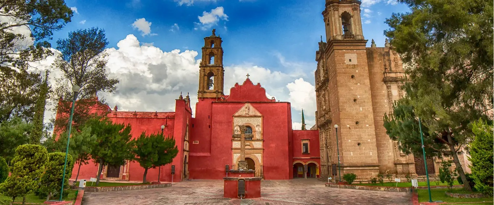

Hidalgo,Mexico
|
Hidalgo, located in east-central Mexico, played a pivotal role in Mexico's independence movement. It was named after Miguel Hidalgo, who initiated the cry for independence in 1810. The state's history is intertwined with mining, particularly silver and gold, contributing to its economic growth. Today, Hidalgo is known for its blend of indigenous roots, colonial heritage, and vibrant cultural traditions. |
Around Hidalgo, an array of captivating activities awaits. Dive into history in Dolores Hidalgo, exploring its role in Mexico's fight for independence, and discover colonial architecture in Pachuca and Real del Monte. Nature enthusiasts can marvel at the Basaltic Prisms of Santa María Regla or unwind in the Tolantongo Caves' hot springs amidst stunning landscapes. Immerse yourself in vibrant cultural celebrations, like the International Balloon Festival in Huasca de Ocampo, or delve into local markets, savoring regional cuisine and artisan crafts. For outdoor enthusiasts, the region offers ample opportunities for hiking, biking, and horseback riding, inviting exploration of its picturesque countryside and natural reserves. Hidalgo's diverse offerings promise an enriching experience for history buffs, nature lovers, and adventurers alike. |
This state is renowned for its association with spiritualism and witchcraft. Catemaco hosts an annual "Brujo's Congress," drawing shamans and healers who perform rituals and ceremonies, attracting visitors seeking spiritual guidance and alternative healing practices. This event showcases a unique blend of traditional beliefs and indigenous spirituality, contributing to the region's reputation for mystical experiences. |